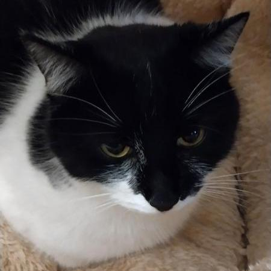

Hello! I am ACatCoder and welcome to my page.
I code just for fun in many languages, mainly Rust, but also in
HTML, CSS, Javascript and Python. I write my code by hand without AI. I will note that I do not publish projects
often. I usually publish them on my Github.
About me

Recent projects
Last updated: 2026-09-06-
sep
SEP is a project that works a little like grep, except it embeds the document to interpret the question semantically. It works best on documents with punctuation that is followed by 2 spaces.